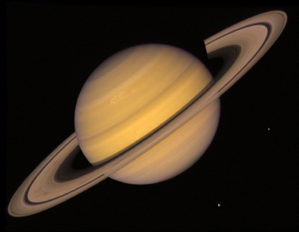

|
|
 SaturnSaturn is a Giant planet it's layered structure is different than terrestrial planets. Saturn's interior composition is primarily that of simple molecules such as hydrogen and helium, which are liquids under the high pressure environments found in the interiors of the outer planets, and not solids. Motions in the interior of Saturn contribute in a very special way to the development of the powerful and extensive magnetosphere of Saturn. Heat generated within Saturn contributes to the strange motions of the atmosphere. The striking appearance of Saturn stems mainly from the spectacular rings. The atmosphere looks much less dramatic. The clouds of Saturn are much less colorful than those of Jupiter. This is because the composition of Saturn's atmosphere includes more sulfur. This adds to Saturn's overall yellow appearance. The three clouddecks of Saturn are to be found mostly low in the atmosphere, while hazes of smog can be found higher up. Saturn is not much changed from its early evolution out of the primitive solar nebula, and in fact, may still be forming. Motions in the cloud patterns indicate that, like Jupiter, the basic weather of Saturn can be described as a striped pattern of winds. Saturn's magnetosphere is not as big as Jupiter's, but it is still pretty big. It is big enough to hold all of Saturn's moons. It is probably made the same way as is Jupiter's, which affects its overall shape and structure. The shape is also affected by the fact that Saturn's moon Titan does not contribute a very large cloud to the magnetosphere. The rings of Saturn definitely affect the motion of particles in the magnetosphere. The gas giant planet Saturn has a large group of 31 moons. It also has the largest, most complex, and best-known ring system in our Solar System. Saturn's moon Titan is one of the few moons in the Solar System with much of an atmosphere. It is also one of the largest moons in the Solar System. Some of Saturn's moons are odd. Iapetus is quite dark on one side and very bright on the other. Hyperion is shaped like a garbage can. Prometheus and Pandora are called the "shepherd moons" because they herd particles into Saturn's "F ring". Phoebe is very dark and moves in a strange orbit. It may be an asteroid or Kuiper Belt Object that Saturn's strong gravity captured long ago. The other medium-sized moons of Saturn are Rhea, Dione, Tethys, Enceladus, Janus and Epimetheus. Some of Saturn's moons are icy moons. Most of the others are small moons which are basically large rocks in space. Some stories from old myths include characters that some of Saturn's moons were named after. |